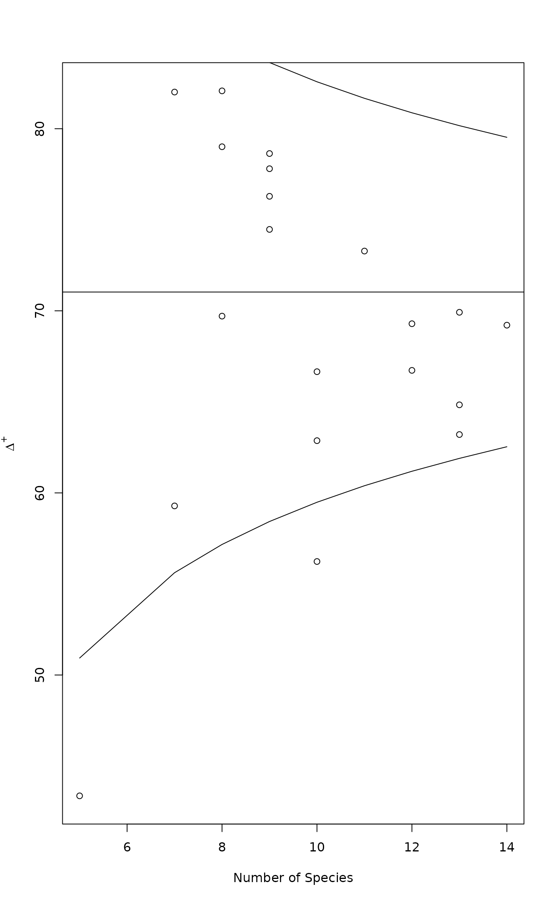

Indices of Taxonomic Diversity and Distinctness
taxondive.RdFunction finds indices of taxonomic diversity and distinctness, which are averaged taxonomic distances among species or individuals in the community (Clarke & Warwick 1998, 2001)
Arguments
- comm
Community data.
- dis
Taxonomic distances among taxa in
comm. This should be adistobject or a symmetric square matrix.- match.force
Force matching of column names in
command labels indis. IfFALSE, matching only happens when dimensions differ, and in that case the species must be in identical order in both.- x
Classification table with a row for each species or other basic taxon, and columns for identifiers of its classification at higher levels.
- varstep
Vary step lengths between successive levels relative to proportional loss of the number of distinct classes.
- check
If
TRUE, remove all redundant levels which are different for all rows or constant for all rows and regard each row as a different basal taxon (species). IfFALSEall levels are retained and basal taxa (species) also must be coded as variables (columns). You will get a warning if species are not coded, but you can ignore this if that was your intention.- labels
The
labelsattribute of taxonomic distances. Row names will be used if this is not given. Species will be matched by these labels incommanddisintaxondiveif these have different dimensions.
Details
Clarke & Warwick (1998, 2001) suggested several alternative indices of taxonomic diversity or distinctness. Two basic indices are called taxonomic diversity (\(\Delta\)) and distinctness (\(\Delta^*\)):
| \(\Delta = (\sum \sum_{i<j} \omega_{ij} x_i x_j)/(n (n-1) / 2)\) |
| \(\Delta^* = (\sum \sum_{i<j} \omega_{ij} x_i x_j)/(\sum \sum_{i<j} x_i x_j) \) |
The equations give the index value for a single site, and summation goes over species \(i\) and \(j\). Here \(\omega\) are taxonomic distances among taxa, and \(x\) are species abundances, and \(n\) is the total abundance for a site. With presence/absence data both indices reduce to the same index \(\Delta^+\), and for this index Clarke & Warwick (1998) also have an estimate of its standard deviation. Clarke & Warwick (2001) presented two new indices: \(s\Delta^+\) is the product of species richness and \(\Delta^+\), and index of variation in taxonomic distinctness (\(\Lambda^+\)) defined as
| \(\Lambda^+ = (\sum \sum_{i<j} \omega_{ij}^2)/(n (n-1) / 2) - (\Delta^+)^2\) |
The dis argument must be species dissimilarities. These must be
similar to dissimilarities produced by dist. It is
customary to have integer steps of taxonomic hierarchies, but other
kind of dissimilarities can be used, such as those from phylogenetic
trees or genetic differences. Further, the dis need not be
taxonomic, but other species classifications can be used.
Function taxa2dist can produce a suitable dist object
from a classification table. Each species (or basic taxon) corresponds
to a row of the classification table, and columns give the
classification at different levels. With varstep = FALSE the
successive levels will be separated by equal steps, and with
varstep = TRUE the step length is relative to the proportional
decrease in the number of classes (Clarke & Warwick 1999).
With check = TRUE, the function removes classes which are distinct for all
species or which combine all species into one class, and assumes that
each row presents a distinct basic taxon. The function scales
the distances so that longest path length between
taxa is 100 (not necessarily when check = FALSE).
Function plot.taxondive plots \(\Delta^+\) against Number of
species, together with expectation and its approximate 2*sd
limits. Function summary.taxondive finds the \(z\) values and
their significances from Normal distribution for \(\Delta^+\).
Value
Function returns an object of class taxondive with following items:
- Species
Number of species for each site.
- D, Dstar, Dplus, SDplus, Lambda
\(\Delta\), \(\Delta^*\), \(\Delta^+\), \(s\Delta^+\) and \(\Lambda^+\) for each site.
- sd.Dplus
Standard deviation of \(\Delta^+\).
- ED, EDstar, EDplus
Expected values of corresponding statistics.
Function taxa2dist returns an object of class "dist", with
an attribute "steps" for the step lengths between successive levels.
References
Clarke, K.R & Warwick, R.M. (1998) A taxonomic distinctness index and its statistical properties. Journal of Applied Ecology 35, 523--531.
Clarke, K.R. & Warwick, R.M. (1999) The taxonomic distinctness measure of biodiversity: weighting of step lengths between hierarchical levels. Marine Ecology Progress Series 184: 21--29.
Clarke, K.R. & Warwick, R.M. (2001) A further biodiversity index applicable to species lists: variation in taxonomic distinctness. Marine Ecology Progress Series 216, 265--278.
Note
The function is still preliminary and may change. The scaling of taxonomic dissimilarities influences the results. If you multiply taxonomic distances (or step lengths) by a constant, the values of all Deltas will be multiplied with the same constant, and the value of \(\Lambda^+\) by the square of the constant.
Examples
## Preliminary: needs better data and some support functions
data(dune)
data(dune.taxon)
# Taxonomic distances from a classification table with variable step lengths.
taxdis <- taxa2dist(dune.taxon, varstep=TRUE)
plot(hclust(taxdis), hang = -1)
# Indices
mod <- taxondive(dune, taxdis)
mod
#> Species Delta Delta* Lambda+ Delta+ S Delta+
#> 1 5.000 22.736 29.232 900.298 43.364 216.82
#> 2 10.000 51.046 55.988 822.191 56.232 562.32
#> 3 10.000 41.633 46.194 1025.471 62.869 628.69
#> 4 13.000 50.795 55.140 888.244 64.837 842.88
#> 5 14.000 63.498 67.856 715.393 69.211 968.95
#> 6 11.000 70.201 76.361 628.743 73.281 806.09
#> 7 13.000 61.605 66.187 679.337 69.918 908.94
#> 8 12.000 52.544 56.374 756.375 66.729 800.74
#> 9 13.000 50.526 54.108 849.448 63.205 821.67
#> 10 12.000 60.068 64.960 730.736 69.291 831.49
#> 11 9.000 69.589 77.740 404.609 77.803 700.23
#> 12 9.000 62.405 69.795 552.129 74.470 670.23
#> 13 10.000 47.316 53.842 536.429 66.657 666.57
#> 14 7.000 71.383 82.091 239.543 82.013 574.09
#> 15 8.000 68.564 77.097 334.889 79.010 632.08
#> 16 8.000 55.984 64.400 978.014 69.708 557.66
#> 17 7.000 53.913 60.222 632.990 59.286 415.00
#> 18 9.000 73.235 81.865 438.355 76.288 686.59
#> 19 9.000 68.727 76.091 336.364 78.636 707.73
#> 20 8.000 72.343 80.670 444.915 82.078 656.62
#> Expected 65.330 62.560 71.031
summary(mod)
#> Delta Delta* Delta+ sd(Delta+) z(Delta+) Pr(>|z|)
#> 1 22.7362 29.2322 43.3636 10.0499 -2.7530 0.005905 **
#> 2 51.0458 55.9878 56.2323 5.7727 -2.5636 0.010359 *
#> 3 41.6334 46.1936 62.8687 5.7727 -1.4140 0.157360
#> 4 50.7952 55.1396 64.8368 4.5677 -1.3562 0.175047
#> 5 63.4979 67.8564 69.2108 4.2482 -0.4285 0.668251
#> 6 70.2011 76.3614 73.2810 5.3189 0.4229 0.672332
#> 7 61.6049 66.1871 69.9184 4.5677 -0.2437 0.807499
#> 8 52.5437 56.3743 66.7287 4.9215 -0.8743 0.381975
#> 9 50.5258 54.1079 63.2051 4.5677 -1.7134 0.086640 .
#> 10 60.0680 64.9597 69.2906 4.9215 -0.3537 0.723567
#> 11 69.5894 77.7396 77.8030 6.3011 1.0747 0.282517
#> 12 62.4049 69.7949 74.4697 6.3011 0.5457 0.585290
#> 13 47.3158 53.8421 66.6566 5.7727 -0.7578 0.448548
#> 14 71.3834 82.0909 82.0130 7.7069 1.4249 0.154186
#> 15 68.5645 77.0970 79.0097 6.9314 1.1510 0.249714
#> 16 55.9840 64.3999 69.7078 6.9314 -0.1909 0.848565
#> 17 53.9134 60.2224 59.2857 7.7069 -1.5240 0.127501
#> 18 73.2349 81.8645 76.2879 6.3011 0.8342 0.404155
#> 19 68.7273 76.0909 78.6364 6.3011 1.2069 0.227457
#> 20 72.3431 80.6704 82.0779 6.9314 1.5937 0.111005
#> Expected 65.3302 62.5603 71.0313
#> ---
#> Signif. codes: 0 ‘***’ 0.001 ‘**’ 0.01 ‘*’ 0.05 ‘.’ 0.1 ‘ ’ 1
plot(mod)
